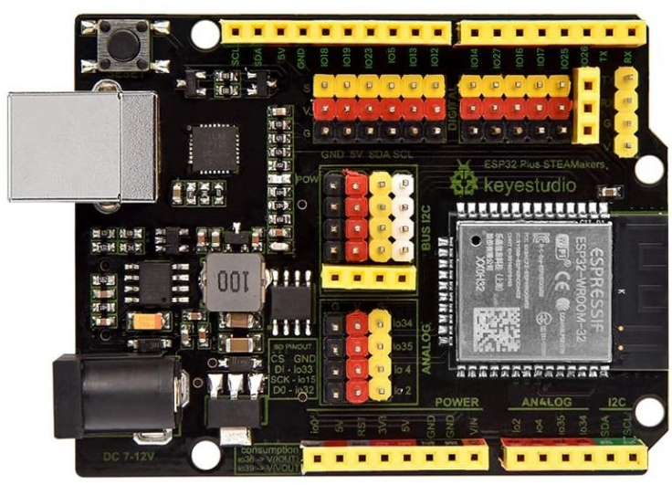
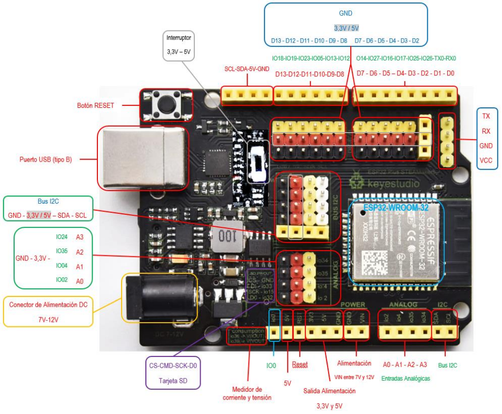
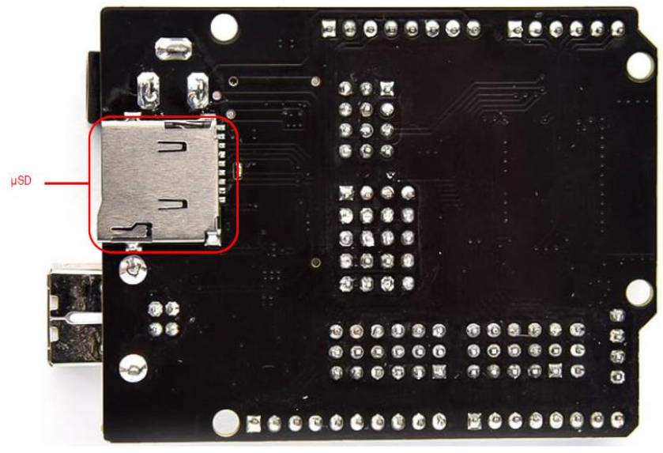

En nuestro caso como elemento de control vamos a utilizar una placa de control programable ESP32 Steamakers por varios motivos:

- Basada en ESP32 lo que significa, capacidad de proceso, conectividad wifi y bluetooth, etc.
- Factor de forma Arduino y compatibilidad con shields de Arduino.
- Fácil conexionado. Pinout macho disponible para los puertos de la placa, luego el conexionado se puede hacer sin protoboard.
- Sensores integrados: energía, temperatura y campo magnético.
- Lector de tarjeta microSD incorporada.
- Arduinoblocks es totalmente compatible con la misma, pensado para todas sus funcionalidades.
- Detallada documentación técnica.
- Prolija documentación didáctica.
- Calidad de construcción y soporte de fabricante.
- Diseñada en España por docentes para la enseñanza.
- Varios distribuidores en España.
Características técnicas y pinout
Las características más importantes de esta placa son:

- Microcontrolador Tensilica Xtensa 32-bit LX6 a 160MHz.
- Conectividad Wifi 802.11 b/g/n/e/i.
- Conectividad Bluetooth 4.2 y modo BLE.
- Zócalo para tarjetas µSD.
- 14 entradas y salidas digitales con alimentación.
- Conector serie hembra con alimentación.
- Conector I2C para conectar hasta 5 dispositivos a la vez sobre la misma placa.
- Conector hembra I2C para conexión de una pantalla OLED.
- Pulsador Reset.
- Conector de 5V.
- Conector de 3.3V.
- Interruptor 3.3-5V seleccionable para cambiar entre estas dos tensiones en algunos pines de alimentación.
- Entradas y salidas analógicas.
- Sensor Hall y de temperatura integrado.
- 2 convertidores Digital-Analógico (DAC) de 8 bits.
- 16 convertidores Analógico-Digital (ADC) de 12 bits.
- 16 canales PWM.
- 2 UART.
- 2 canales I2C.
- 4 canales SPI.
- 448Kb ROM.
- 520 KB SRAM.

- 8KB+8KB SRAM en RTC.
- 1kbit eFUSE.
- 512 bytes Memoria Flash (EEPROM).
- 10 sensores táctiles.
- 4 temporizadores internos de 64 bits.
Para saber más sobre ESP32 STEAMakers
Os ponemos una relación de recursos para aprender a trabajar con la placa y sacarle partido a la misma: